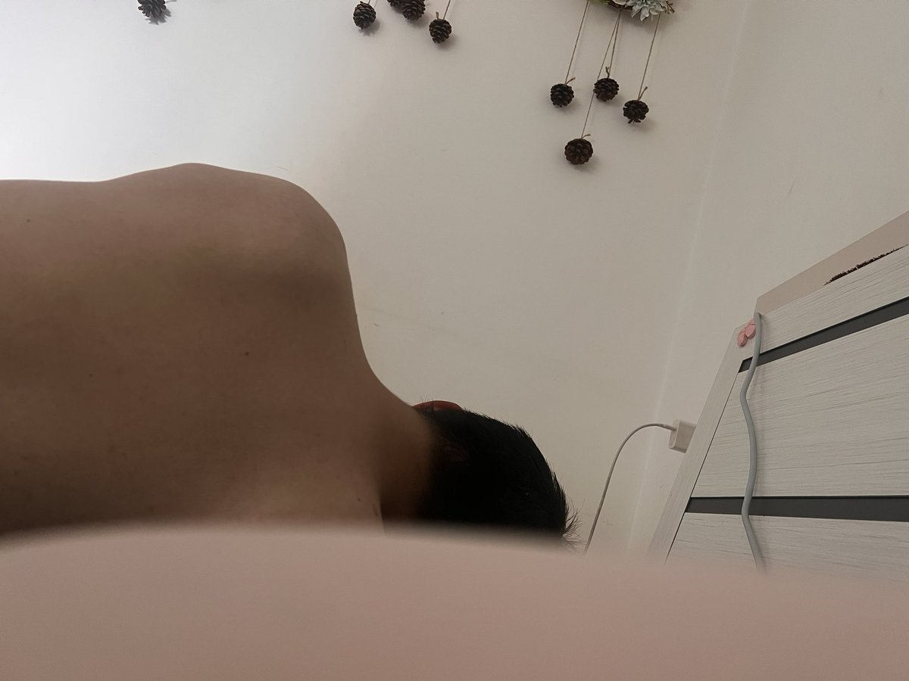

谢蝶恋雨
@xiedielianyu
@yuuaoi771806 做错了事情就老老实实道歉啊魂淡👿
1.道歉并承诺
2.描述为什么会这样做
3.给予补偿方案
只要你能做到以上三点，我认为大部分非原则性错误都会原谅
但是如果你觉得因为自己在恋爱关系处于女性的位置所以不需要任何形式的道歉，补偿。自己可以无理取闹，男友还不许翻脸。那请你屏蔽我（

小奈喵🍥
@yuuaoi771806
梦见男朋友惹我生气了 然后醒来后把还没睡醒的男朋友说了一顿 然后就这样不理我了怎么办 https://t.co/PSVujA5ohG